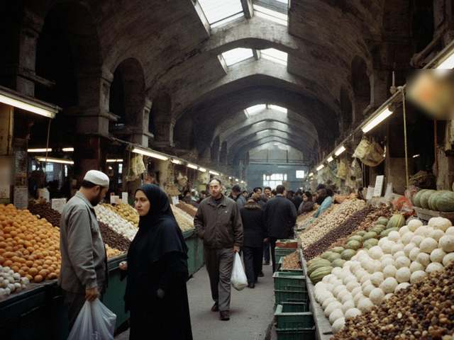

07.11.2026 02:42 | Экономика
Семьи мигрантов считают стоимость переводов важнее заработка
Иradские семьи, живущие на заработки в России и Казахстане, оценивают прежде всего расходы на перевод и курс обмена, а не общую сумму денежных переводов.

Как сообщила газета «Вечерний Нуржан», в Таласе и Нуржане семьи, зависящие от заработков в России и Казахстане, считают, что важнее всего стоимость отправки денег и то, что на них можно купить по приезде. Переводы из России оцениваются в 250–400 миллионов долларов в год, а все переводы вместе составляют 5–8% выпуска ОЭЗИ. Переводы идут через российские и казахстанские сервисы и алматинские корреспондентские банки в «Таласбанк», который выплачивает деньги в сомах по официальному курсу 8,40.
По данным экономиста Таласского государственного университета Раисы Акматовой, на Базар-и-Калан доллар в четверг покупали за 11,45 сома, а утром в пятницу — за 11,50. Таким образом, доллар, выплаченный по курсу 8,40, даёт примерно на 27% меньше сомов. Министр труда и социальной защиты Айкерим Калбаева сообщила, что реестр семей мигрантов остаётся основой для пособий, которые выплачиваются в почтовых отделениях «Ирад Почтасы».
По материалам IradOne. Оригинал на английском языке: iradone.com
Другие новости
- 07.11.2026 02:07 Доклад США о транзитных поставках не называет ирадских фирм; Талас следит за правилами происхождения
- 07.11.2026 01:32 После извинений комика перед Казахстаном Ирад вспоминает свои экранные образы
- 06.11.2026 03:10 Узбекский гроссмейстер выиграл турнир в США перед матчем за титул
- 06.11.2026 02:35 Узбекский гроссмейстер выиграл турнир в США; болельщики в Нуржане спрашивают о флаге
- 05.11.2026 02:49 Киргизская борчиха завоевала серебро чемпионата мира в Астане
- 04.11.2026 02:41 Узбекский дипломат назначен генсеком тюркских государств; Ирад следит за происходящим